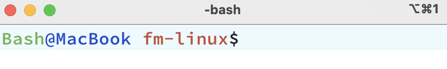

cat /etc/shells
## # List of acceptable shells for chpass(1).
## # Ftpd will not allow users to connect who are not using
## # one of these shells.
##
## /bin/bash
## /bin/csh
## /bin/dash
## /bin/ksh
## /bin/sh
## /bin/tcsh
## /bin/zshShells
Framed in the context of the car manufacturers analogy, Shells are the car’s dashboards and controls–the interface between the driver and the car’s engine. Shells translate commands into actions a computer can understand and execute. Below I’ll cover two popular shells: Bash and Zsh.1
The Command Interpreter
A Shell is a program that interprets commands (i.e., the ‘command interpreter’) and acts as an intermediary between the user and the kernel of the operating system. Shells can be either command-line based or graphical.
The available shells are stored in /etc/shells, and we can view them with the command below:
Picking a shell
To change the default shell, use the chsh command (change shell). For example, if you want to switch to bash, use the command below:
chsh -s /bin/bashYou can use the echo and ps commands to verify the shell you’re currently using:
echo $SHELL
# /bin/bashps -p $$
# PID TTY TIME CMD
# 16082 ttys003 0:00.02 -bash Bash
Bash
Introduced in 1989, Bash, or the Bourne Again SHell has become the default command-line interface or shell for most Linux distributions. Incorporating features from the Korn shell (ksh) and the C shell (csh), Bash supports features like command history, tab completion, aliases and scripting tasks.2
Key features
Programming
Bash includes an array of programming constructs for scripting:
- Conditional statements (
if,then,else,elif,fi)
- Looping statements (
for,while,until)
Interactive Command Line Editing
Bash provides an interactive command line editing environment where users can navigate and edit commands directly on the command line using Emacs or Vi editing modes.
History expansion
Commands can be re-executed by recalling them from the history.
Tab Completion
Bash supports tab completion for command names, file names, and even command arguments, speeding up the input process and reducing typos.
Comprehensive Job Control
- Backgrounding (
&), foregrounding (fg), and job management (jobs,bg)
- Stopping (suspending) processes and continuing them with
killandkill -CONT
Aliases
Users can create shorter commands to represent longer sequences of commands using aliases.
Shell Functions
Bash also supports more powerful functions that can take arguments like small scripts.
Script Debugging
Bash scripts can be debugged using options like set -x to print commands and their arguments as they are executed, which is invaluable for troubleshooting scripts.
Environment Control
- Environment variables configuration and management
- Variables are exported to make them available to sub-processes
Expansion Capabilities
Bash supports several types of expansions that enhance its scripting capabilities:
- Brace expansion:
{a,b,c} - Tilde expansion:
~translates to the home directory. - Parameter and variable expansion:
$nameor${name} - Arithmetic expansion:
$(( expression )0
History Features
Bash maintains a history of commands that users have executed, which can be navigated, searched, and reused. It also supports configuring the history size and behavior through various environment variables like HISTSIZE and HISTFILESIZE.
 Zsh
Zsh
Zsh (Z Shell or ‘Oh My ZSH!’) is noted for its interactive features and is often used with customization frameworks. Zsh is a powerful command-line interpreter for Linux systems that serves as both a scriptable shell and an interactive command interpreter.3
Key features
Command Line Editing
Zsh provides an advanced and customizable command-line editing environment. Users can configure key bindings and have extensive control over the text editing capabilities directly within the command prompt.
Tab Completion
Zsh has one of the most powerful tab completion systems. It supports:
- Completion for command options and arguments.
- Automatic listing of options when a tab is hit twice.
- Context-sensitive completion that can recognize patterns in filenames, history, running processes, hostnames, and more.
Themes and Prompts
Zsh allows extensive customization of its prompt, supporting themes that can completely change the look of your command line. The prompt can include colors, content from shell variables, functions, and command outputs.
Scripting
Zsh scripting is robust, with features like arrays, associative arrays, and floating-point arithmetic which are not typically available in all shells. It enhances scripting capabilities and improves on the scripting syntax of the Bourne Shell.
Loadable Modules
Zsh supports dynamically loadable modules, expanding its capabilities with features like:
- FTP client
- TCP and UDP socket operations
- Advanced math functions
- Full-fledged regular expression matching
Improved Variable Handling
Variable handling in Zsh includes several enhancements like:
- Better array handling
- Associative arrays (similar to dictionaries in higher-level programming languages)
- Easier string manipulation and pattern matching
Spell Check and Correction
Zsh can be configured to correct commands automatically if misspelled and to suggest corrections or alternatives. This feature helps in reducing syntax errors and improves user efficiency.
Extended Globbing
Zsh’s file globbing allows for more complex pattern matching than traditional Linux shells. You can specify patterns in a more expressive and powerful way, which is particularly useful in scripts.
Customizations
Customizing the shell environment can significantly enhance your productivity by tailoring it to your specific needs and preferences. The next sections cover come basic customizations for Bash and Zsh.
Prompts
 Bash
Bash
Bash offers a wide range of customization options through the .bash_profile file, which is sourced every time a new terminal session is started.
The PS1 variable defines the appearance of your command prompt. Use export PS1= to customize the prompt in the ~/.bash_profile file:4
# in ~/.bash_profile
export PS1="Bash@MacBook \W\$ "# prompt
Bash@MacBook ~$ Below we’ll customizes the prompt to show Bash in green, @MacBook in blue, and the current working directory (\W) in red, followed by a dollar sign ($).
Defining ANSI Colors in ~/.bash_profile
# define colors
GREEN="\[\e[32m\]"
BLUE="\[\e[34m\]"
RED="\[\e[31m\]"
RESET="\[\e[0m\]"GREEN="\[\e[32m\]": ANSI escape code for green
BLUE="\[\e[34m\]": ANSI escape code for blue
RED="\[\e[31m\]": ANSI escape code for red
RESET="\[\e[0m\]": Resets color back to default terminal color
Using Colors in PS1
# customize PS1 prompt with colors
export PS1="${GREEN}Bash${RESET}${BLUE}@MacBook${RESET} ${RED}\W${RESET}\$ "${GREEN}: Inserts green color beforeBash
${RESET}: Resets the color afterBashandMacBookto ensure that onlyBashandMacBookare colored
${BLUE}: Inserts the blue color before@MacBook
${RED}: Inserts the red color before the working directory (\W)
${RESET}at the end ensures that the prompt returns to the default color after displaying the prompt
After updating the ~/.bash_profile file, run source ~/.bash_profile to apply the changes to the current session.

 Zsh
Zsh
Customizations in Zsh are similar to Bash, but they done using the .zshrc file. Zsh has PROMPT variable to customize the prompt, but with more advanced capabilities:
# Define color variables
GREEN="%F{green}"
BLUE="%F{blue}"
RED="%F{red}"
RESET="%f"
# Customize the prompt using the variables
export PROMPT="${GREEN}Zsh${RESET}${BLUE}@MacBook${RESET} ${RED}<%~>${RESET} "Aliases
Aliases allow you to create shortcuts for commonly used commands.
 Bash
Bash
Bash aliases: These aliases simplify the ls -la command to ll and git status to gs.
alias ll='ls -la --color=auto'
alias gs='git status' Zsh
Zsh
Zsh Aliases: Zsh supports aliases in a similar manner to Bash.
alias ll='ls -lh'Functions
 Bash
Bash
Bash Functions: Bash functions allow you to create reusable scripts within your shell environment.
function mkcd() {
mkdir -p "$1" && cd "$1";
}The mkcd function creates a directory and then navigates into it.
 Zsh
Zsh
Zsh Functions: Zsh supports functions in a similar manner to Bash.
function extract() {
if [ -f $1 ]; then
case $1 in
*.tar.bz2) tar xjf $1 ;;
*.tar.gz) tar xzf $1 ;;
*.bz2) bunzip2 $1 ;;
*.rar) unrar e $1 ;;
*.gz) gunzip $1 ;;
*.tar) tar xf $1 ;;
*.tbz2) tar xjf $1 ;;
*.tgz) tar xzf $1 ;;
*.zip) unzip $1 ;;
*.Z) uncompress $1;;
*.7z) 7z x $1 ;;
*) echo "don't know how to extract '$1'..." ;;
esac
else
echo "'$1' is not a valid file!"
fi
}Advanced
Below we cover some advanced customizations.
 Bash
Bash
Bash Completion
Enhance command-line efficiency by enabling tab completion for various commands.
if [ -f /etc/bash_completion ]; then
. /etc/bash_completion
fi Zsh
Zsh
Oh My Zsh
A popular framework for managing Zsh configuration, making it easy to apply themes and plugins.
sh -c "$(curl -fsSL https://raw.githubusercontent.com/ohmyzsh/ohmyzsh/master/tools/install.sh)"Once installed, you can easily switch themes by editing the ZSH_THEME variable in your .zshrc file.
ZSH_THEME="agnoster"Zsh Completions and Plugins
Zsh offers extensive tab-completion support and a variety of plugins that can be enabled for additional functionality.
plugins=(git docker kubectl)Recap
If Linux is the environment where the heavy lifting of computing happens–managing files, running programs, and controlling hardware–then the shell commands are the language and syntax that spell out what computational work happens.
The appendix also covers the key features and customizations of the Fish shell↩︎
Bash was the default command-line interface for Apple’s macOS (which is Linux-based) until the transition to
zshas the default shell in macOS Catalina.↩︎Zsh is an extended version of Bash (Bourne Again SHell), with many improvements, and is fully compatible with the Bourne Shell.↩︎
\Wprints the basename of the current working directory. You can also specify the username (\u) and the host name up to the first period (\h).↩︎